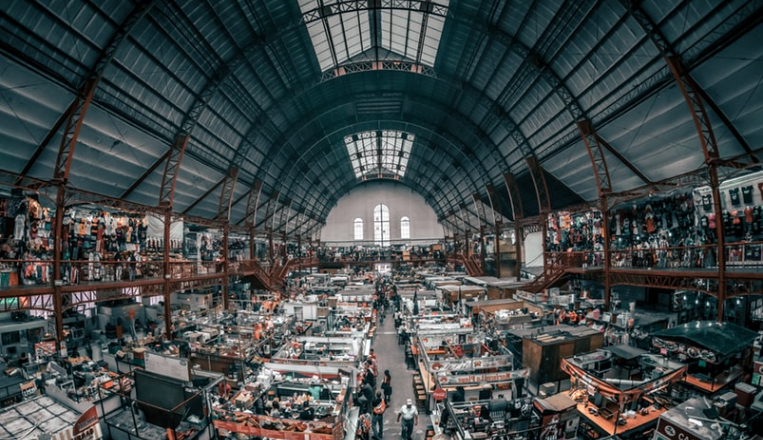

Industri - Industri
Hitz dan Unggul
Hitz dan Unggul


Industri apa saja akan tren di era Revolusi Industri 4.0 mendatang?
1. Makanan dan minuman
Memang kebutuhan makanan dan minuman merupakan kebutuhan yang tidak menuntut waktu maupun keadaan suatu zaman.
Di era Revolusi Industri 4.0 mendatang maka, kebutuhan pangan akan meningkat dan pemenuhan kebutuhan masyarakat
akan menuntut berbagai kebutuhan pokok.
2. Tekstil dan Pakaian
Mampu memproduksi dengan biaya yang rendah namun, sangat berkualitas. Merkea dituntut untuk memenuhi kebutuhan
fashion yang semakin berkembangan di dunia
3. Otomotif
Besarnya kebutuhan masyarakat untuk memenuhi kebutuhan dengan pengembangan mobil listrik agar lebih ramah
ligkungan dan mengandalkan energi listrik
4. Elektronik
Kebutuhan perangkat elektronik semakin tinggi dan umumnya mampu mengekspor barang semi konduktor dan
komponen elektronik seperti aluminium, electrolyc, dan tantalum.Dunia juga akan memerlukan barang jadi
untuk pembuatan maspion dan polytron
5. Kimia
Dengan perkembangan pabrik yang sudah terintegrasi dengan teknologi AI dan IOT dalam proses produksi
sehingga akan sangat banyak kebutuhan yang mencakup produk kimia terutama digunakan sebagai bahan baku
pembuatan mesin atau robot
6. Informatika (IT)
Pekerjaan ini merupakan profesi yang akan mendominasi di era Revolusi Industri 4.0 mendatang.
Tidak hanya itu, pekerjaan di bidang IT ini justru akan mengalami peningkatan bahkan,
kemungkinan akan hadir profesi baru di bidang IT ini. Selain itu, gaji dan kebutuhan masyarakat yang
terus meningkat akan menjadi daya tarik tersendiri untuk pekerjaan ini.
Apa saja profesi yang termasuk dalam Informatika :
1. Web Design (Programmer)
2. Digital Marketing
3. Graphic Design
4. Mobile Developer
5. Copywriting
6. Software Architect
7. Data Scientist
8. Software Engineer
9. Solution Architent